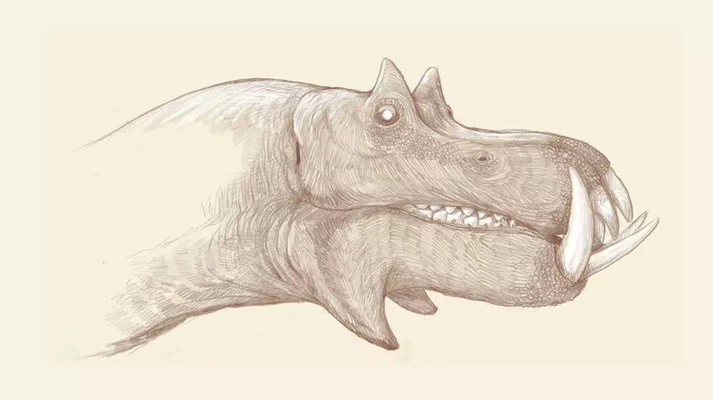

Muchos huesos de dinosaurio, como el fémur y la mandíbula, tienen formas reconocibles.. Los científicos pueden saber cómo encajan los huesos observando la forma en que se hallaron y estudiando otros dinosaurios y reptiles vivos. También pueden averiguar la forma de los huesos que faltan. Las partes perdidas se fabrican con plástico, fibra de vidrio o yeso, y luego se colocan en su lugar. Los científicos pueden aprender sobre los músculos de los dinosaurios estudiando a pájaros y cocodrilos. Pueden ver cómo se unían los músculos al esqueleto estudiando las cicatrices que han dejado en los huesos. Disponemos de buenos ejemplos de piel de dinosaurio conservada, lo que nos da pistas sobre el patrón y textura de la piel. El color es elección del artista.
Lo que usted ve sobre estas líneas no es una reconstrucción de un dinosaurio. En realidad es la imagen que el artista gráfico C.M. Kosemen ha creado a partir del cráneo de un hipopótamo actual. Para hacerlo, explica, ha aplicado las mismas premisas que se aplican cuando se reconstruye un dinosaurio, y el resultado, salta a la vista.
"Las representaciones de dinosaurios no se parecen a criaturas vivas" sostiene C.M. Kosemen
Este punto de vista provocativo queda reflejado en su libro 'All Yesterdays...', publicado en el 2012 y que ha reavivado la polémica tras un reciente artículo en Atlas Obscura. En opinión de Kosemen, hay una tendencia entre los paleoilustradores, entre los que él se cuenta, a exagerar las garras de los dinosaurios y de hacer sus cabezas parecidas a las de los cocodrilos. “Siempre tienen esas extrañas sonrisas en las que se ven los dientes”, asegura, al tiempo que recuerda que la mayoría de los animales tienen labios y protuberancias de grasa y piel que tapan los dientes y sobresalen aquí y allá.
El problema, a su juicio, es que las representaciones de dinosaurios no se parecen a criaturas vivas. Para explicarlo salpica su libro con ilustraciones de animales actuales reinterpretados con el supuesto criterio de la reconstrucción de dinosaurios. Así, por ejemplo, lo que representa en la siguiente imagen es cómo serían un elefante, una cebra y un rinoceronte si los interpretáramos a partir de sus huesos con esas pautas
Para Kosemen, las ilustraciones de los dinosaurios deberían tomar más rasgos de los animales que viven hoy en día. Estos están llenos de estructuras blandas que no quedan en los fósiles y que se manifiestan en forma de aletas, papadas o sacos de piel. “Puede que incluso haya formas que nadie ha imaginado”, asegura. “Pudo haber dinosaurios herbívoros, por ejemplo, que tuvieran armaduras como las del pangolín o el armadillo que no fueran conservadas en fósil. Podría también haber dinosaurios con espinas como las de puercoespín”.
Para el divulgador y doctor en Paleontología Francisco Gascó, conocido en redes como @Pakozoiko, el análisis de Kosemen tienen muy poco rigor e ignora principios básicos de la reconstrucción de dinosaurios. “Su visión incide en la parte de interpretación libre que conlleva la reconstrucción de fósiles”, asegura, “Pero lo cierto es que ignora la base a la hora de empezar una reconstrucción”.
Antes de empezar a trazar líneas de contornos de piel a partir de un esqueleto los restos deben estar estudiados y clasificados, recuerda, con lo que se crea un marco de actuación. “Si se clasifica como un mamífero”, explica, “ya estaríamos desechando escamas, plumas y estructuras más típicas de otros vertebrados, por ejemplo”. Y lo mismo sucede con la musculatura. “La comparación de la musculatura se hace siempre dentro de un "marco filogenético" muy cerrado. Por ejemplo, para dinosaurios se usan únicamente aves y cocodrilos como comparación”.
"Es verdad que hay sesgos en las reconstrucciones”, admite Peñas Artero, “pero hasta un límite”
José Antonio Peñas Artero (@japa6691) es uno de los mejores ilustradores españoles en el campo de la paleontología. En su opinión, Kosemen se ha limitado a plantear una caricatura burda del proceso de paleoreconstrucción, ignorando completamente la base en la que se apoya dicho proceso, que es la anatomía comparada.
Lo que plantea este ilustrador no se parece en nada a lo que hacen los profesionales en este terreno. “No es cierto, no reconstruimos los seres poniendo una capa de piel en los huesos. La anatomía comparada es fundamental en estos casos”, reclama. “Si alguien reconstruye un cachalote o una orca”, explica, “nunca le pondría una cola de reptil o pez. Cualquier anatomista identificaría los cráneos de esos animales como de mamíferos, y aunque nunca encontráramos sus colas, sabría que en el movimiento natatorio los mamíferos ondula en el plano vertical, porque nuestra espina dorsal se mueve así”.
Sin embargo, sí hay parte de la critica que tiene razón, como la que se refiere e a elementos que no podemos conocer por el registro fósil. “Que incluya la representación del elefante es gracioso porque, de no existir elefantes vivos, no podríamos haber interpretado el enorme hueco nasal de los cráneos de mamuts y mastodontes como el lugar donde va de la trompa”, asegura. “Pero como teníamos los elefantes como referencia, nadie reconstruiría un mamut con un aspecto parecido a lo que él [Kosemen] dibuja”.
Si recogiéramos restos de delfines actuales, sin ir más lejos, tampoco sabríamos que tienen una aleta. Y eso paso exactamente con los primeros restos de ictiosaurios, aunque sabiendo que eran reptiles y cómo se movían se predijo que podrían tener una proyección en forma de aleta caudal. “Y cuando e descubrieron los fósiles alemanes, que habían dejado una marca del perfil de las aletas, se comprobó que su predicción era correcta”, recuerda Peñas.
"Sigue habiendo muchos sesgos", admite el ilustrador, "como representar a los pterosaurios como una especie de dragones, cuando desde el principio estaban cubiertos de pelo".
Otro error repetido, se queja, es de dibujar a los dinosaurios con cara de psicópatas, con expresión de querer devorar al espectador en cualquier momento. En 1802, el artista Alexander Anderson reprodujo el esqueleto montado de uno de estos grandes animales, parecidos a los mamuts, y le colocó sus colmillos encajados en los orbitales. Un año después, Rembrandt Peale pensó que estos animales eran carnívoros y que necesitaban los colmillos para desgarrar la carne, de modo que los colocó mirando hacia abajo.
Explica Peñas. "Hoy ya no hacemos estas cosas, nosotros conocemos a los rinocerontes y animales parecidos y sabemos que eso no se corresponde con una vela", sentencia. "Es cierto que existen los sesgos y que se trasmiten, pero las recreaciones que ha hecho él no se basan en eso, sino en inventarse el animal". Cuando un ilustrador recibe el encargo para reconstruir un animal tiene muchos datos encima de la mesa para no tener que inventarse cosas.
"Hay normas que te permiten extrapolar esos datos", explica el ilustrador y pone el ejemplo concreto de la reconstrucción que hizo él mismo de Pelecanimimus, un dinosaurio que se encontró en Cuenca. La estructura de la muñeca permitió identificarlo como un ornitomímido, luego ya sabes que las patas van a ser de un animal corredor no muy grande. "También sabes que no puede ser un animal muy pesado". Estos datos se pueden deducir de las marcas que dejan los músculos en los huesos, rugosidades que aparecen donde se insertan los tendones.
"Yo hice mi reconstrucción, en base a otras que se habían hecho antes, e introduje algunos cambios. Así que lo tuve que modificar y ponerle las patas más largas". Una vez terminado este proceso el ilustrador tiene algo mas de libertad respecto a la librea, es decir, el color y aspecto exterior. El último asunto serio es la presencia de plumas y su posición.